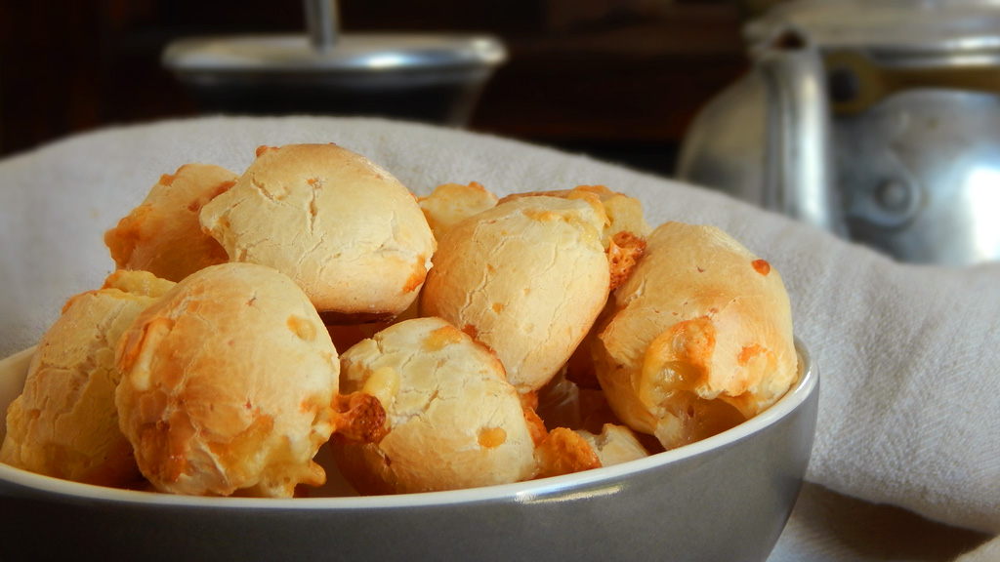
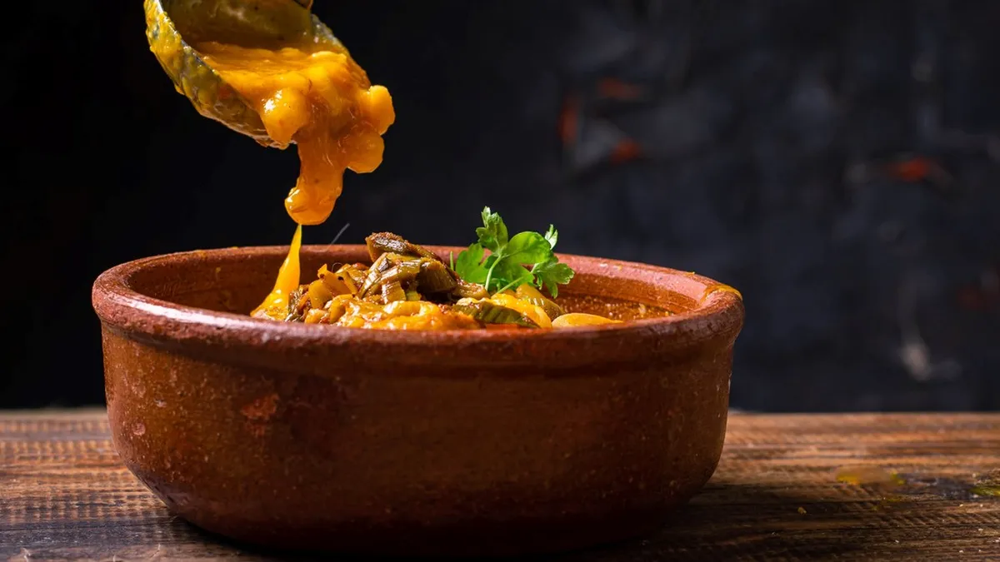

CHIPA
INGREDIENTES
- 500gr Fécula de mandioca (almidón de mandioca)
- 3 huevos
- 50 gramos de manteca
- 100cc de leche
- 2 cditas de sal
- 135 gr Quesos semi duros
- 150 gr queso cremoso
- 2 cditas polvo para hornear
PREPARACIÓN
- Hacer una corona con la fécula, el polvo para hornear y la sal. En el centro colocar los huevos, los quesos (en hebras o rallados), la manteca a punto pomada y la leche de a poco.
- Unir todos los ingredientes con las manos hasta formar una masa. Al no tener gluten, no es necesario amasar, más bien unir. Taparla y llevarla a la heladera por 30 min.
- Hacer los bollos de tamaño medio (teniendo en cuenta que van a crecer un poco), colocarlos en una placa y llevarlos a la heladera por 30 min más.
- Precalentar el horno y cocinar a fuego fuerte (230 grados) por 15 minutos aproximadamente o hasta que estén bien dorados.

EMPANADAS
INGREDIENTES (para una docena)
- 12 tapas para empanadas
- 1/2 kg. de carne picada
- 2 cebollas
- 2 dientes de ajo
- 1/2 pimiento morrón rojo
- 1 tomate
- 2 cdas. de puré de tomates
- 1 puñado de aceitunas
- Pimentón
- Comino
- Sal y pimienta
PREPARACIÓN
- En una olla con aceite caliente agregar la cebolla y el morrón. Dejar dorar unos minutos y cuando estén a medio cocer (cebolla transparente), agregar el ajo y un poco de sal y pimienta.
- Subir el fuego y agregar de una toda la carne picada. Mover la carne para que no quede pegada. Cuando la carne esté sellada agregar el tomate en cubos y las 2 cdas de puré de tomates. Condimentar con pimenton y comino, un poco más de sal y pimienta y mezclar bien. Tapar (no del todo, dejar un pequeño hueco) y dejar cocinar una media hora revolviendo de a poco.
- Sacar del fuego y dejar enfriar en la olla. Agregar las aceitunas picadas y mezclar bien. (En este paso pueden agregar cualquier otra cosa que le quieran poner: huevo duro, pasas, papa, etc)
- Repartir el relleno en las tapas de empanada, y cerrar con un repulgue tradicional. Antes de meterlas en el horno pueden pintarlas con huevo, pero es muy a gusto y opcional.
- Poner nuestras empanadas de carne en una placa y llevar a horno fuerte hasta que estén doradas y a disfrutar!

LOCRO
INGREDIENTES
- 300 gr de maíz blanco partido
- 200 gr de poroto pallares blanco
- 200 gr de panceta
- 150 gr de chorizo criollo
- 1/2 chorizo colorado
- 200 gr de pechito de cerdo
- 200 g de falda
- 1 cebolla
- 500 gr de calabaza
- 100 g de cebolla de verdeo picada
- 1 taza de aceite mezcla
- Pimentón y ají molido a gusto
- 1/2 taza de agua
Para la salga picante:
PREPARACIÓN
- Remojar los porotos pallares y el maíz blanco 24 horas antes de preparar el guiso (guardar en recipiente con agua en heladera).
- Cortar en cubos todos los ingredientes.
- Cocinar en una cacerola el maíz junto con los porotos, la calabaza y la cebolla con 2 litros de agua.
- Revolver con cuchara de madera cada 15 minutos.
- La salsa picante. Picar la cebolla de verdeo y verterla en una ollita con el aceite a baja temperatura. La idea es que se cocine lento y no quede crujiente.
- Añadir 2 cucharadas de pimentón y 2 cucharadas de ají molido a medio vaso de agua y sumarlo al aceite. Mezclar. Cocinar 5 minutos más y retirar.
- Servir el locro bien caliente en cazuela de barro y la salsa picante en recipiente aparte para incorporar a gusto.